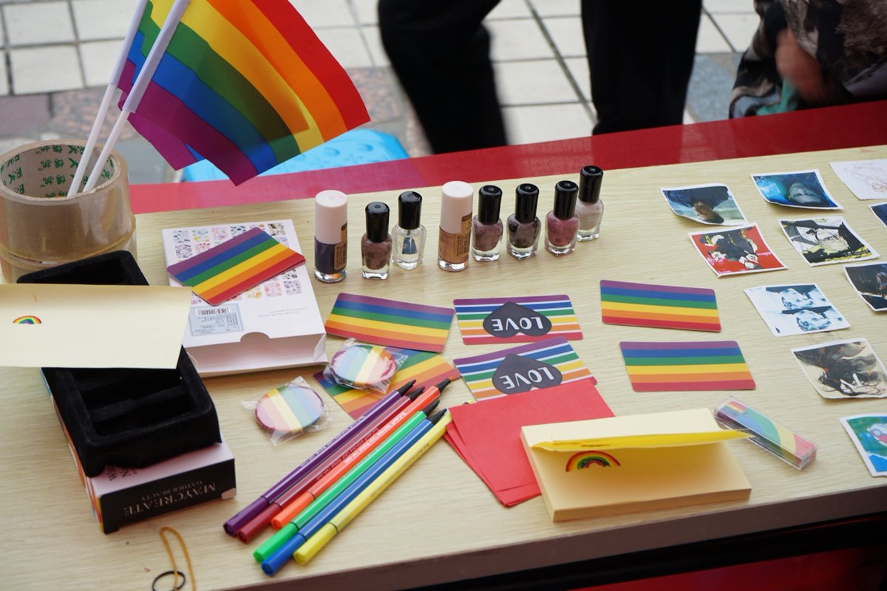
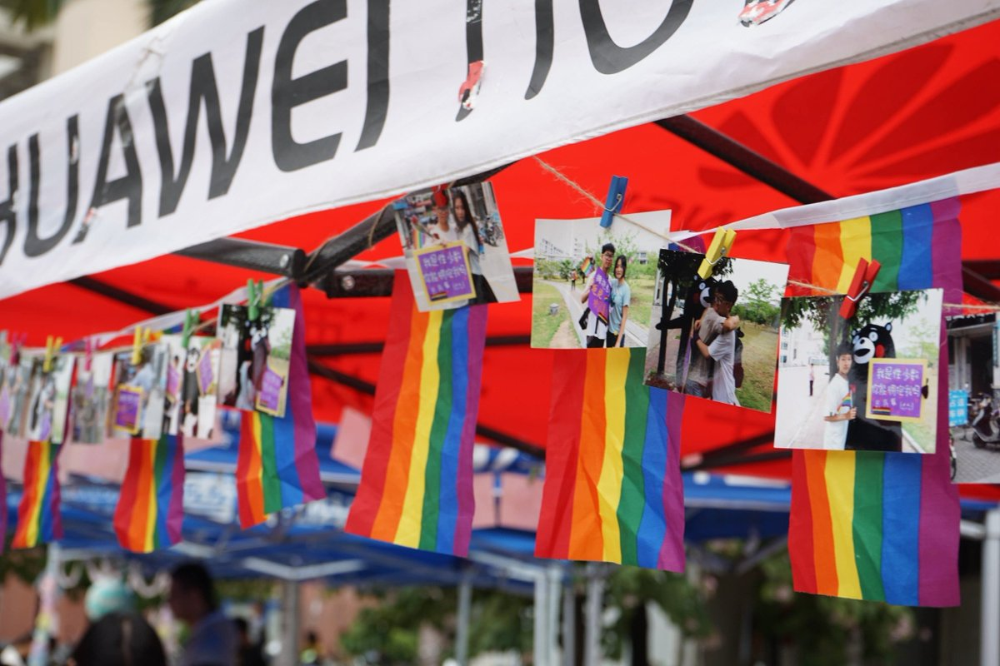
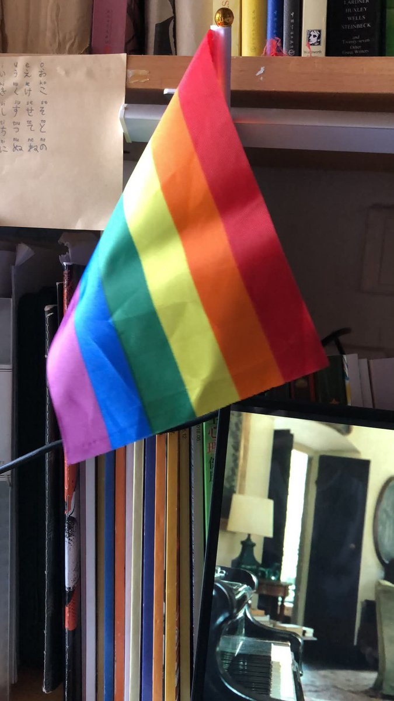

KuroHikari.
@ax09s84751
@grok 中国对于LGBTQ trans 都态度怎么样



李老师不是你老师
@whyyoutouzhele
“我们曾短暂到达过未来”
9月1日，有网友晒出大学时期的旧照称，2018年前后，其所在高校仍允许LGBTQ社团公开存在，并可以和其他学生社团一起参加校园招新。
网友发布的照片中，社团摊位摆放着彩虹旗、彩虹徽章等物品。
其称，到2020年，该社团最终以“活动人数不足”为由关闭。 https://t.co/MjJ1GXd1sd https://t.co/cjMHLFWNML